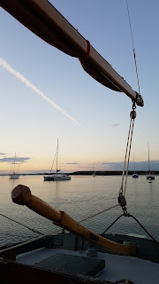
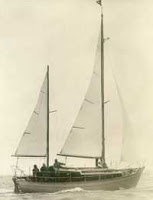
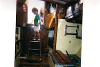

| Setting out from Bawdsey 12.7.2016 (Bertie's photo) |
{kind=link}
I was sitting on the train from London battling an
absurd desire to cry. I knew that if I started the torrent would be
unstoppable and my fellow passengers and I would find ourselves paddling home
though a salty pool like the desperate creatures in Alice in Wonderland. My distress was amorphous and unreasonable. How to contain it?
I’ve an underhand technique which I use very sparingly for
Mum. She only rarely weeps, yet her mind is too often awash with fear and
grief. A natural disaster, someone else’s illness, “Abide With Me” all provide her
with something definite to be sad about. It turns the emotion into facts and words which, with any luck, she will soon forget. But that strategy wasn’t going to work for me
on the train now leaving platform 13. Hurricane Matthew and its human
devastation, the children of the Calais Jungle, bombardment of Aleppo – ? Absolutely not.
In my bag was my son Bertie’s log of his Peter Duck summer. I hauled it out and
began to read before my eyes blurred. Peter Duck is 70 this year: Bertie’s 21. He met her first when
he was 4 and has been a regular, much–appreciated crew member ever since. But, as any long serving able-seaman can tell you, the view from the bridge deck
looks very different when you’re alone and in charge. This summer, Bertie and Peter Duck have been making their own
way around the East Coast rivers, single-handed, without the benefit of maternal bossing.
{kind=link}
“If
not duffers, won’t drown”? I’ve never felt
quite convinced by that one. My favourite quote is Able Seaman
Titty’s reflection on the old East Coast sailor who had become her constant companion and imaginary friend: “Anything might happen to Peter Duck and he would always come out alright.” (Swallowdale, chapter 4) My
daughter-in-law Alice who is working on her Day Skipper
qualification described Peter Duck earlier
this year as a “forgiving” boat. I can endorse this from years of dufferishnesses which would have been so much worse had it not been for PD’s inherent stability, responsiveness, sea-kindliness.
So, command this year has been handed over to Able Seaman Bert. (That’s
nominal command, we all know it's Peter Duck who’s actually in charge.) First they undertook
the briefest excursions between Deben and Orwell, then steadily began working
southwest river by river to the mouth of the Thames and back. They carried a cabin load
of books, were occasionally joined by friends, but essentially it was the two
of them, the boat and her boy. Nothing to write up in the annals of the
Cruising Association or brag about in Cowes but a string of unadventurous
adventures in the Magic of the Swatchways tradition where a bracing, breezy coastal
passage ends in a quiet anchorage up a some muddy creek listening to the marsh
birds calling and watching the light and colour soak imperceptibly away.
 |
| Bradwell Creek 4.8.2016 (Bertie's photo) |
{kind=link}
The only serious obligation laid on Bertie was that he MUST keep a
log. From April 25th 1947 (when Arthur Ransome had a notably
unsatisfactory start to the season at Burnham-on-Crouch) Peter Duck’s adventures have been
recorded in some 15 volumes covering 60 of her 70 years to date. I had intended that my birthday offering to her would
be some attempt at collation or even transcript of these potterings in home
waters. Her big voyages (round Britain in 1991, to the Baltic in 1993 and again
to St Petersburg in 1995) have already been written up by her most dedicated
and intellectual owners Greg and Ann Palmer and the records of her time on the
South Coast are lost. For me,
nevertheless, the accounts - in several hands -- of those repetitive meanderings around the rivers of the Thames
Estuary that have been the stuff of her summers over seven decades, have a
definite reassuring charm. It was such a relief, for instance, having stupidly let her swing in the night with too much anchor chain, and thus
found ourselves dried out on a steep lee shore for the following day, to
discover, from an earlier log entry, that my dear father had made exactly the same mistake in the same
place almost half a century earlier.
 |
| The earliest known photo of PD, probably Oct 1946 |
{kind=link}
Bertie’s log book, read on that train home from London, contained
an account of narrowly averted disaster that I felt I had read somewhere before. His cousin Ruth (also in her 20s) had joined for a day sail from
Burnham-on-Crouch.
“We let the mooring go
and got the sails up. As we started beating upriver into the fresh breeze I
went to turn the engine off and found it had already obliged. And that it
wouldn’t turn on again. After half an hour spent crazily criss-crossing the
crowded Burnham anchorage, quietly swearing and mentally sweating, we finally
grabbed hold of a mooring. As well as trying to spot an “easy” mooring (ie
without lots of expensive yachts very close by) most of the half hour had been
spent desperately trying to plan how to pick up a warp-less mooring in these
conditions without engine and also waiting for the tide to turn (to reduce the
wind-over-tide effect)”
And here’s what happened when Peter Duck was previously in Burnham, almost 70 years ago:
“Left mooring under engine.
No time to try sails before tide turned. Engine stopped and we began drifting
through the crowded anchorage….” The older-middle-aged crew (one A Ransome and his friend Colonel Busk) grabbed the stern
bollard of a friendly motorboat and
settled down to eat their lunch as they were unable to hoist the sails in the wind-over-tide conditions. Eventually they set off again but became entangled in a flock
of racers. Attempting to keep out of the way they had finally succeeded in picking
up their mooring for the second time when a sudden gust of wind sent PD sailing on “Busk, with his usual presence of mind,
dropped the buoy then, preserving our dignity and just as if we had intended it
we proceeded under mainsail. Then, after due interval, we made a jaunty circuit
among the anchored vessels and picked up our mooring without incident.”
 |
| Carl Hermann Sehmel, Ransome's original 'Peter Duck' |
When Bertie had first told me about his and Ruth's experience it had been
the similarities that had struck me (the unreliable engine, the crowded anchorage,
the complicated conflicts of wind and tide, the inherent unpredictabilities of
picking up a mooring under sail). Now, re-reading, I am mainly impressed by the
canniness of the older generation - my generation, now. Arthur Ransome was 63 in 1947 and I'm 62. He and Colonel Busk managed to conceal their difficulties from the outside world. They
ate their lunch to pass the time. They "preserved their dignity", and made “a jaunty
circuit” instead of “crazily criss-crossing” like the desperate youngsters, "quietly swearing and mentally sweating".
 |
| Bertie meets Peter Duck, 1999 |
{kind=link}
An indefinable sense of calm and happiness came over me as I
sat on that train reading Bertie’s well- filled pages. You might wonder why I had felt so close to the edge, so ready to sob? I'm not quite sure that I can recall ...